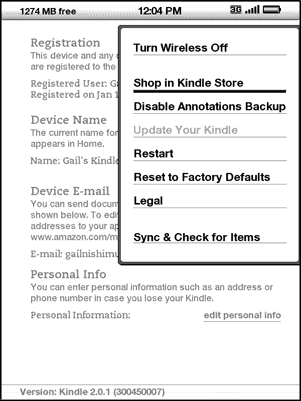

Use the Kindle Settings page to personalize items on Kindle such as the name of your Kindle, automatic backup, personal information, etc. The Settings page also gives you information about your Kindle, such as the software version number. The Experimental page contains a number of prototype concepts we are working on.
The Settings page is shown below and the features are explained in the list that follows. To go to the Settings page, press the Menu button while on your Home screen. Use the 5-way controller to underline "Settings" and press to select.
Registration - this is the Amazon.com account name to which your Kindle is registered. All Kindle Store and other charges will be applied to the credit card associated with your 1-Click account.
Device Name - you can change the name of your device to anything you want. This name shows at the top of the Home screen.
Device E-mail - this is the e-mail address of your Kindle. You and your friends can send documents to this address and they will be converted by Amazon and sent to your Kindle. To edit this e-mail address, go to http://www.amazon.com/manageyourkindle.
Personal Info - enter any personal or contact information here such as an address or phone number in case you lose your Kindle.
Version - indicates which version of software your Kindle is using.
Your Kindle needs to be registered with your Amazon.com account information to use many of the Kindle features such as purchasing content. If your Kindle is lost or transferred to another user, you should deregister your Kindle from your account. The process to register or deregister is described below. You can also register or deregister your Kindle on the Manage Your Kindle page on:
http://www.amazon.com/manageyourkindle
If your Kindle is not already registered, follow these steps:
 Tip: If your Amazon user name or password contains characters not present on the Kindle keyboard, press the Symbol key on the bottom of the keyboard to see a menu of additional characters and select the character you require.
Tip: If your Amazon user name or password contains characters not present on the Kindle keyboard, press the Symbol key on the bottom of the keyboard to see a menu of additional characters and select the character you require.
Once registered, you can make purchases on the Kindle Store, convert personal documents on Amazon, use Basic Web, and take advantage of other Amazon-sponsored services. If your Kindle has incorrect registration information, deregister the device and then reregister it.
If you want to transfer ownership of your Kindle or return it for service or recycling, you should deregister it to prevent unauthorized purchases. The process is similar to the registration process described above. Just select "deregister" from the Registration section and select "ok" to confirm. Note that you will not be able to buy or download samples from the store, or use Basic Web if your Kindle is not registered.
You can also deregister your Kindle from the Manage Your Kindle page on Amazon.com.
Your Kindle acquires a default name when it is first registered. This name is based on your Amazon.com account name, and is displayed at the top of your Home screen. If you want to edit this name on your Kindle only, follow these steps:
 Tip: To add any personal information such as your contact information, navigate with the 5-way so that "Edit personal info" is underlined then press the 5-way. Use the keyboard to add your information, then select "Submit" when you have finished.
Tip: To add any personal information such as your contact information, navigate with the 5-way so that "Edit personal info" is underlined then press the 5-way. Use the keyboard to add your information, then select "Submit" when you have finished.
You can choose the dictionary you want to use when you look up words while you are reading. The default is The New Oxford American Dictionary included on your Kindle, but you can change your dictionary choice by purchasing a different dictionary on the Kindle Store and then following these steps:
Automatic Backup will backup your last location read, all of your notes, and bookmarks you make to Amazon.com on any of your purchased content. If you delete an item from your Kindle or your Kindle is lost, stolen, or damaged, you can automatically restore your annotations, bookmarks, and the last location you read by downloading the item from the Manage Your Kindle page on Amazon.com.
You can enable or disable automatic backup by following the steps below:
The Settings menu allows you to go to other places on your Kindle as well as update your software or restart your device. These menu options are defined below. To display the Settings menu, press the Menu button while you are on the Settings screen.

Turn Wireless Off - turns off Whispernet. When Whispernet is off, this option will change to Turn Wireless On.
Shop in Kindle Store - takes you to the storefront of the Kindle Store.
Disable Annotations Backup - by default the last location read on your content and any annotations you've made to Kindle Store content is backed-up at Amazon. You can disable the automatic backup by selecting this option.
Change Primary Dictionary - change the dictionary you are using for the built-in Lookup function. This menu option is only present if you have at least one additional dictionary loaded on your Kindle.
Update Your Kindle - installs the latest software for your Kindle. When an update is loaded on your device, this menu option becomes available, otherwise it is grayed out.
Restart - restarts your Kindle.
Reset to Factory Defaults - resets your Kindle to its original factory settings. You should only select this action if instructed to do so by Kindle Customer Service.
Legal - provides trademark, copyright, and other notices about the software installed on your Kindle.
Sync & Check for Items - connects to Amazon.com to download any newly available items and sync the furthest page read and bookmarks for all the books on your device.
The Experimental page is a place for you to try out and experiment with some of the concepts we have under development. We encourage you to send us your feedback to help us decide how to improve the concepts and whether or not you think we should make them part of the Kindle product. To open Experimental, follow the steps below.
To give us feedback on items on the Experimental page, send an e-mail to
kindle2-feedback@amazon.com. We are really interested in hearing what you have to say, so type as much as you want. Based on your feedback, we may add or remove content from the Experimental page, so let your thoughts be known.